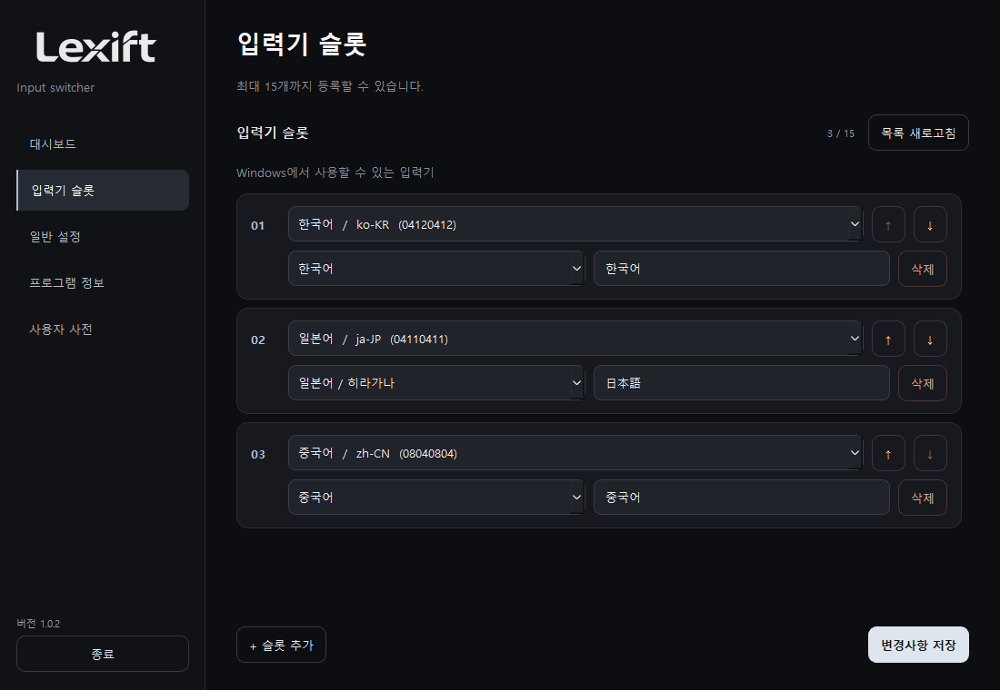
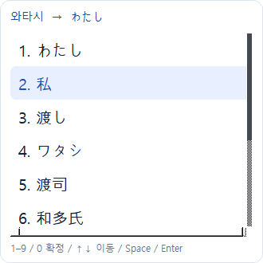
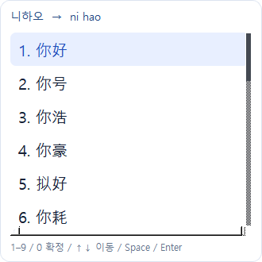
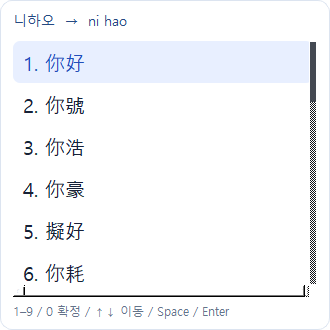
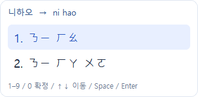
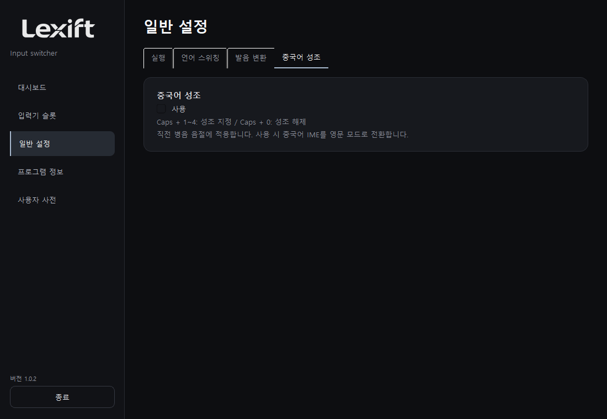
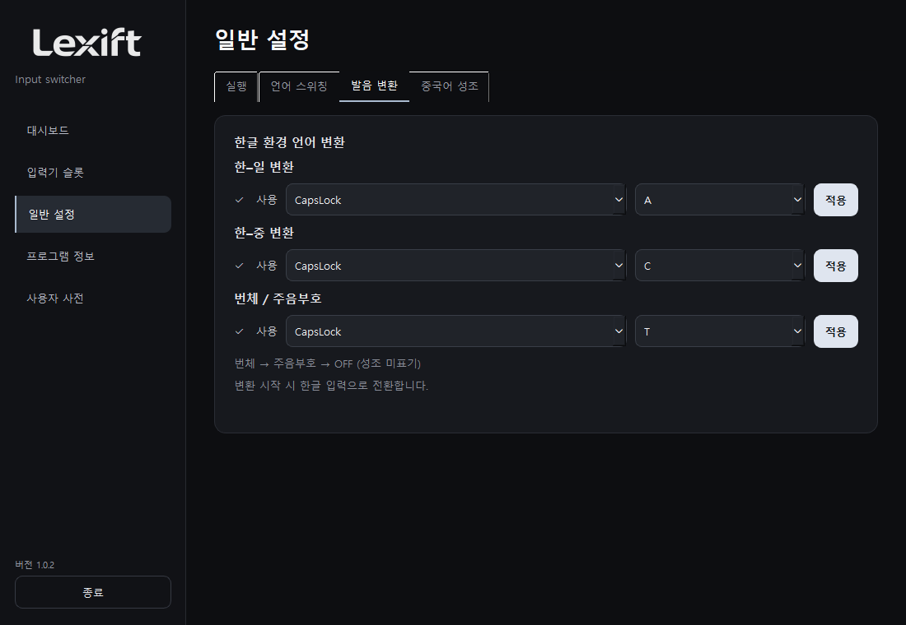
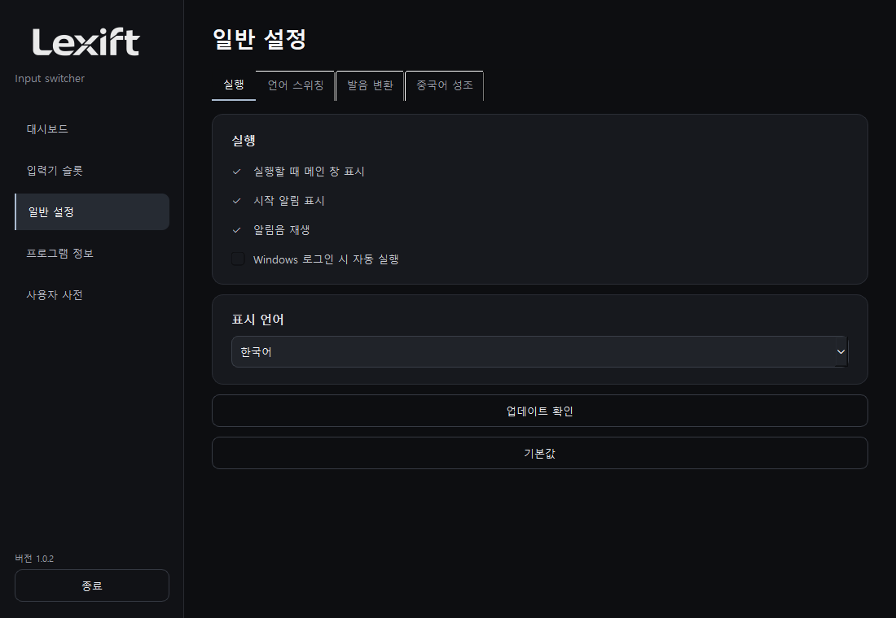
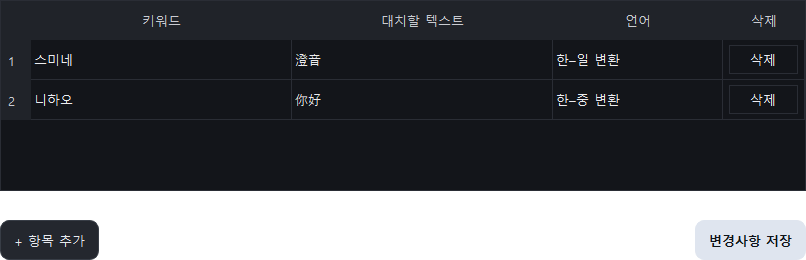

사용설명서
개요
입력기 전환부터 발음 입력까지, 키보드로 간편하게.
Windows 10 / 11 x64. 배포본은 Python 설치 불필요.
다운로드 1.0.2 ↗설치 및 실행
ZIP 압축 해제 후 Lexift.exe를 실행합니다. 사용할 입력기를 Windows에 설치하고, 입력기 슬롯에서 등록합니다.

입력기 전환
Caps + Q로 입력기 목록을 엽니다. 방향키로 선택한 뒤 Enter를 누르거나 표시된 번호를 누릅니다.

일본어 입력
입력란에서 Caps + A를 누른 뒤 일본어 발음을 한글로 입력합니다. 예: 와타시 → 私. 같은 단축키를 다시 누르면 종료합니다.

후보 선택: ↑↓ 이동, Space / Enter 확정, 1~9 / 0 번호 선택, Esc 닫기.
발음 변환 시작 시 한글 입력으로 전환합니다. 한국어 발음 입력용 기능으로 일부 환경에서는 지원하지 않을 수 있습니다.
중국어 간체
Caps + C를 누른 뒤 중국어 발음을 한글로 입력합니다. 예: 니하오 → 你好, 췐 → 全 / 權 계열 후보. 간체 후보를 표시합니다.

번체 및 주음부호
Caps + T를 누를 때마다 번체 → 주음부호 → OFF 순으로 전환합니다. 예: 중궈 → 中國, 니하오 → ㄋㄧ ㄏㄠ. 주음에는 성조를 자동 부여하지 않습니다.


병음 성조
일반 설정의 중국어 성조 탭에서 사용을 선택합니다. 입력란으로 돌아가면 중국어 IME가 영문 모드로 전환됩니다. 병음 입력 직후 Caps + 1~4로 성조를 지정합니다. Caps + 0은 성조를 지웁니다.
hao → hǎo (Caps + 3), liu → liú (Caps + 2), gui → guǐ (Caps + 3). 음절은 띄어쓰기나 작은따옴표로 구분하세요. 기능을 끄면 성조 단축키도 해제됩니다.

환경 설정
실행, 언어 스위칭, 발음 변환, 중국어 성조로 분류했습니다. 사용 여부는 체크박스로 지정하고 단축키는 적용을 눌러 저장합니다. 중복 단축키는 저장할 수 없습니다.


기본값은 단축키, 기능 설정, 사용자 사전을 초기화합니다. 확인 후 실행하세요.
사용자 사전
키워드, 대치할 텍스트, 언어를 입력한 뒤 저장합니다. 예: 스미네 / 澄音 / 한–일. 삭제는 해당 행 오른쪽 버튼을 사용합니다.

문제 해결
후보가 없으면 기능의 사용 여부와 입력기 설치 상태를 확인합니다. 일본어 변환에는 Microsoft 일본어 IME가 필요합니다. 일부 앱의 보안 입력란이나 접근성 제한 영역은 지원하지 않습니다.
후보 엔진은 기능 사용 시 준비하며, 종료 후 3초가 지나면 해제합니다. 전체 메모리 사용량은 입력기와 사용 상태에 따라 달라집니다.
GitHub Issues ↗